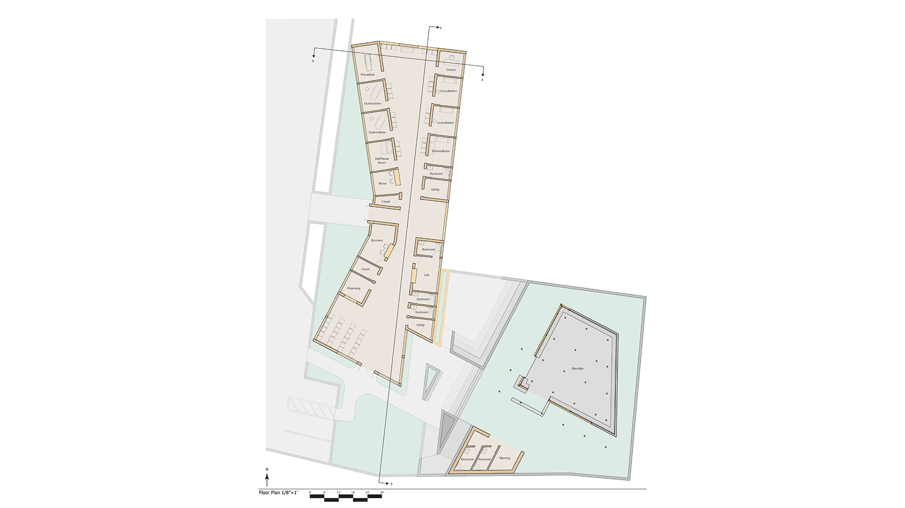
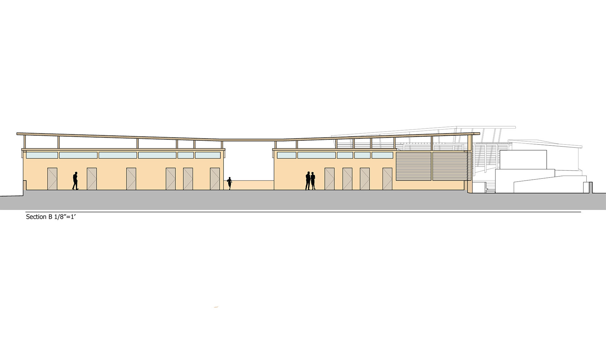

COURSE: Arch-4601
LOCATION: Bali
DATE: 2022
DETAIL OF COURSE
In this course, one is to reaserch about Tenganan, Bali. We are to determine religeous traditions and analyse the site. After the reaserch phase, one is given specific details for a clinic to be design on given site. We are to incorporate traditional Balinese architecture that we reaserch into the final_design.
Site Context
The site for this design is located in Tenganan, Bali. The village is well known for its religious traditions. There are multiple community buildings found between dwellings. Near the site, there are stores used by the occupants of Tenganan to sell to tourists. The site is currently used as a parking lot for tourists or citizens of Tenganan that have cars or trucks since these vheicles can not enter the village due to narrow streets.

For my design, I decided to use the layout of Balinese temples. The temples in Bali are organized into 3 portions called Tri Mandala. The outer courtyard is the least sacred, the middle courtyard is a sacred zone and the inner most courtyard is the most sacred zone. I interpreted this as public space semi-private space and private space.
The southernmost portion of my design is where the public zone is located. This public zone consists of the Wantilan (an event space for the community), Warung (snack kiosk), and an amphitheater. The middle portion of my building represents the semi-private zone. This zone consists of the lab, pharmacy, business office, and restrooms. The northernmost part of my design is in the private zone. This zone consists of consultation rooms, examination rooms, procedure rooms, nurse and doctor rooms.

The central portion of the clinic building is meant to be used as waiting areas for the private and semi-private programs. This area has a tall roof to make this very compact design feel more open and to allow natural ventilation from the exterior.